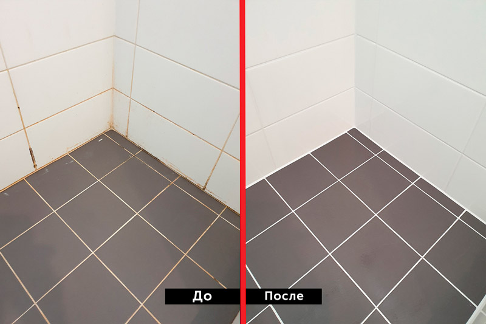

Прибирання квартири, хімчистка та миття вікон у Києві та Броварах
Ми допомагаємо вам відновити чистоту та комфорт у вашому домі — швидко, безпечно та з гарантією якості. Відкрийте для себе зручність преміум-класу з Multi_Cleaning!
✨ Замовити консультацію
Наші послуги
Повний спектр клінінгових послуг для вашого затишку
🏠 Генеральне прибирання
Комплексне глибоке очищення всіх кімнат, кухні, санвузлів, миття вікон, балконів, підлог та меблів. Використовуємо безпечні екологічні засоби.
- ✅ 1-кімнатна — від 800 грн
- ✅ 2-кімнатна — від 1200 грн
- ✅ 3-кімнатна — від 1500 грн
Дізнатися більше →
🛋️ Хімчистка меблів
Професійна хімчистка диванів, крісел, матраців та килимів. Видалення плям, запахів та алергенів безпечними засобами.
- ✅ Крісла — від 300 грн
- ✅ Дивани — від 600 грн
- ✅ Матраци — від 500 грн
Дізнатися більше →
🔨 Після ремонту
Видалення будівельного пилу, миття вікон, підлог, стін, плінтусів, сантехніки та очищення плитки від клею та затирки.
- ✅ 1-кімнатна — від 2000 грн
- ✅ 2-кімнатна — від 2500 грн
- ✅ 3-кімнатна — від 3000 грн
Дізнатися більше →
«Ми несемо відповідальність за результат, який стає продовженням наших слів, і за чистоту, яку ми творимо»
«Ми знаємо, як бережно розкрити красу вашого дому. Наші майстри клинінгу ретельно та з любов'ю повернуть вашій нерухомості первозданний блиск, наповнять кімнати живою свіжістю та створять ту атмосферу глибокого затишку, яку так прагнуть відчути ви та ваша родина після довгого дня.»
Дізнатися більше →
🪟 Миття вікон
Миття вікон з одного або двох боків, балконів, фасадів та вітрин. Без розводів, з використанням еко-засобів.
- ✅ 1 сторона — від 70 грн/шт
- ✅ 2 сторони — від 120 грн/шт
- ✅ Балкони — від 350 грн
Дізнатися більше →
🌿 Чиста хімія
Ми використовуємо лише сертифіковані, безпечні для людей, тварин і навколишнього середовища мийні засоби. Ефективно та без шкоди.
- ✅ Сертифіковані засоби
- ✅ Безпечні для дітей
- ✅ Без шкідливих запахів
Дізнатися більше →

🔥 Хіт після ремонту
✨ Чистка швів плитки — як нові, без заміни!
Міжплиткові шви — це «магніт» для бруду, вологи та бактерій [[1]].
Ми повертаємо їм первозданну чистоту професійними методами:
без пилу, без пошкоджень, без запаху хлорки.
-
🔬
Глибоке очищення парою + ензимні засоби
Видаляє грибок, плісняву та бактерії на 99.7% — безпечно для дітей та тварин [[2]]
-
⚙️
Професійне обладнання: роторні щітки, парогенератор
Досягає глибини 3–5 мм у шві — там, де звичайна губка не дістає [[3]]
-
🛡️
Захисне гідрофобне покриття (опціонально)
Шви не вбирають вологу 12–18 місяців — менше бруду, легше догляд
-
⏱️
Економія 3–5 годин вашого часу
Ви займаєтеся собою, поки ми повертаємо чистоту вашій ванній/кухні
від 60 грн/м²
📸 Точна ціна за фото у Viber за 2 хв
✅ Без подряпин на плитці | ✅ Гарантія 48 годин на результат | ✅ Прибираємо за собою
Дізнатися більше →
Наші розцінки
| Вид послуги |
До 100 м² |
100–150 м² |
150–200 м² |
Від 200 м² |
| Генеральне прибирання |
від 4 150 грн |
від 5 950 грн |
від 8 050 грн |
договірна |
| Прибирання після ремонту |
від 6 250 грн |
від 8 970 грн |
від 12 090 грн |
договірна |
| Підтримуюче прибирання |
від 2 999 грн |
від 3 499 грн |
від 4 999 грн |
договірна |
Миття вікон за районами Киева
Ми обслуговуємо всі райони Киева з одинаковою якістю і швидкістю
Чому обирають Multi_Cleaning?
Наша клінінгова компанія — це поєднання досвіду, турботи та високих стандартів. Ми надаємо послуги з прибирання та хімчистки у Києві, на які дійсно можна покластися.
🔒 Гарантія якості
Працюємо тільки з безпечними засобами, які ефективно видаляють забруднення та не шкодять вашому здоров'ю або довкіллю.
👷 Професійна команда
Наші клінери — це навчені фахівці з багаторічним досвідом. Піклуємось про кожну деталь і гарантуємо результат.
💰 Чесні ціни
Доступна вартість без прихованих платежів. Ви точно знаєте, за що платите, і отримуєте максимум сервісу.
⚡ Швидке реагування
Приїдемо в день замовлення або у зручний для вас час. Працюємо щодня по всьому Києву та передмістю.
Про компанію Multi_Cleaning
Multi_Cleaning — це більше ніж просто клінінгова компанія в Києві. Це історія людини, яка починала з прибирання квартир та офісів власноруч, і з часом створила команду професіоналів.
Засновник компанії розпочинав свою кар'єру як звичайний клінер. Він особисто знає всі тонкощі та труднощі цієї роботи, тому з самого початку побудував сервіс, заснований на повазі до клієнта, відповідальності та якості.
Сьогодні Multi_Cleaning надає повний спектр клінінгових послуг у Києві — від генерального прибирання до хімчистки меблів, прибирання після ремонту та обслуговування офісів. Усі засоби сертифіковані та безпечні для дітей, тварин і навколишнього середовища.
Ми знаємо, що таке справжня чистота, бо ми самі пройшли цей шлях.
Як ми працюємо з миттям вікон в Киеве
Прозорий та надійний процес послуги миття вікон від 70 грн
1
Контакт і замовлення
Ви замовляєте послугу через телефон, WhatsApp, Telegram або форму на сайті. Ми уточнюємо деталі: кількість вікон, район Киева, зручний час.
2
Приїзд спеціаліста
Наш майстер приїжджає з усім необхідним обладнанням в розписаний час. Працюємо у всіх районах Киева — від Шевченківського до Голосіївського.
3
Професійна миття
Миємо вікна спеціальними еко-засобами, безпечними для дітей та тварин. Без розводів, без шероховатостей — кристально чисто і сяйво!
4
Перевірка якості
Ви перевіряєте результат. Якщо щось не задовільнило — безплатно переробимо. Гарантія якості 30 днів!
5
Оплата та спасибо
Сплачуєте за фактично виконану роботу. Готівкою або переводом на карту. Рекомендуємо залишити нам відгук на Google!
Часто задавані питання про миття вікон в Киеве
Знайдіть відповіді на популярні питання про послугу миття вікон від 70 грн
Скільки коштує миття одного вікна в Киеве?
Від 70 грн за одну сторону, від 120 грн за дві сторони. Мінімальне замовлення зазвичай 1-2 вікна. Для великих замовлень (більше 10 вікон) надаємо знижку 10-15%. Телефонуйте для розрахунку: 097-219-86-51
Як часто потрібно мити вікна?
Рекомендується мити вікна мінімум 2 рази на рік (весна та осінь). У Киеве, особливо поблизу доріг або у промислових зонах, рекомендується 3-4 рази на рік. Перші поверхи та приватні будинки можуть потребувати частішої чистки.
Чи безпечні засоби для дітей та домашніх тварин?
Так, абсолютно! Всі наші засоби сертифіковані, екологічні та гіпоалергенні. Безпечні для дітей, домашніх тварин і навколишнього середовища. Не мають різкого запаху і не викликають подразнення.
Ми мостимо вікна в багатоповерхівці?
Так! Ми маємо спеціальне обладнання та страховку для роботи на висотах. Безпечно миємо до 5 поверхів. Для більш високих будинків обговорюємо особливості окремо.
Яка гарантія якості послуги миття вікон?
Ми даємо гарантію 30 днів. Якщо вам щось не сподобалось або виявилися дефекти — безплатно переробимо роботу. Просто зателефонуйте нам протягом місяця!
📖 Переглянути всі питання та відповіді →
Відгуки клієнтів
⭐⭐⭐⭐⭐ — "Чудова робота, повернуся знову! Квартира блищить після генерального прибирання."
⭐⭐⭐⭐⭐ — "Меблі як нові після хімчистки! Дуже задоволені якістю обслуговування."
⭐⭐⭐⭐⭐ — "Замовляли прибирання після ремонту — все ідеально, жодного пилу. Рекомендую!"
📞
Генеральне прибирання квартири у Києві та Київській області
Професійне генеральне прибирання квартири у Києві – це комплексна послуга, що включає глибоке очищення всіх кімнат, кухні, санвузлів. Ми надаємо якісні послуги генерального прибирання у Голосіївському, Дарницькому, Деснянському, Дніпровському, Оболонському, Печерському, Подільському, Святошинському, Солом'янському та Шевченківському районах Києва. Також працюємо у Київській області: Бровари, Бориспіль, Ірпінь, Буча, Вишгород, Обухів, Біла Церква.
Хімчистка меблів у Києві
Професійна хімчистка меблів у Києві – це ефективне видалення плям, пилу, неприємних запахів та алергенів з диванів, крісел, матраців, м'яких кутків. Виїзна хімчистка у всіх районах Києва та Київській області.
Прибирання після ремонту у Києві
Прибирання після ремонту включає видалення будівельного пилу, миття вікон, підлог, стін, плінтусів, дверей, сантехніки, очищення плитки від клею та затирки, а також вивіз сміття.